[1]:
%reload_ext autoreload
%autoreload 2
[2]:
from spFA.spFA.spFA import spFA
import scanpy as sc
import torch
import pandas as pd
import numpy as np
import scipy.stats as stats
import matplotlib.pyplot as plt
import os
from sklearn.decomposition import PCA
import seaborn as sns
from sklearn.preprocessing import StandardScaler, OneHotEncoder
from spFA.spFA.plots import plot_top_weights, plot_weights, plot_variance_explained_view,plot_variance_explained
import matplotlib
import anndata
import umap
/home/capraz/hubershare/anaconda3/lib/python3.8/site-packages/torch/onnx/_internal/_beartype.py:30: UserWarning: module 'beartype.roar' has no attribute 'BeartypeDecorHintPep585DeprecationWarning'
warnings.warn(f"{e}")
/home/capraz/hubershare/anaconda3/lib/python3.8/site-packages/pandas/core/computation/expressions.py:20: UserWarning: Pandas requires version '2.7.3' or newer of 'numexpr' (version '2.7.1' currently installed).
from pandas.core.computation.check import NUMEXPR_INSTALLED
[3]:
rna = pd.read_csv("pbmc5k/pbmc5k_rna.csv", index_col=0)
adt = pd.read_csv("pbmc5k/pbmc5k_adt.csv", index_col=0)
obs = pd.read_csv("pbmc5k/pbmc5k_obs.csv", index_col=0)
[ ]:
[4]:
rna_pca = PCA(50).fit_transform(rna)
[5]:
um = umap.UMAP(n_neighbors=30)
rna_umap=um.fit_transform(rna_pca)
[6]:
um = umap.UMAP()
adt_umap=um.fit_transform(adt)
[7]:
# convert string labels to numeric
obs["lowlevel"] = obs["lowlevel"].fillna("nan")
lowlevel_map = {lab:i for i,lab in enumerate(np.unique(obs["lowlevel"]))}
lowlevel = np.array([lowlevel_map[i] for i in obs["lowlevel"]])
lowlevel
[7]:
array([4, 4, 4, ..., 1, 4, 2])
[8]:
fig, ax = plt.subplots(1)
plot = ax.scatter(rna_umap[:,0], rna_umap[:,1], c=lowlevel)
ax.set_aspect('equal')
plt.xlabel("UMAP 1")
plt.ylabel("UMAP 2")
plt.colorbar(plot)
[8]:
<matplotlib.colorbar.Colorbar at 0x7ffeb1b67b80>
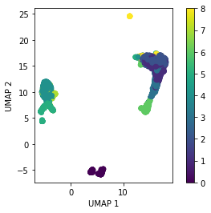
[9]:
# convert string labels to numeric
obs["highlevel"] = obs["highlevel"].fillna("nan")
highlevel_map = {lab:i for i,lab in enumerate(np.unique(obs["highlevel"]))}
highlevel = np.array([highlevel_map[i] for i in obs["highlevel"]])
highlevel_map
[9]:
{'B-Cells': 0, 'Monocytes': 1, 'NK Cells': 2, 'T-Cells': 3}
[10]:
fig, ax = plt.subplots(1)
plot = ax.scatter(rna_umap[:,0], rna_umap[:,1], c=highlevel)
ax.set_aspect('equal')
plt.xlabel("UMAP 1")
plt.ylabel("UMAP 2")
plt.legend()
No handles with labels found to put in legend.
[10]:
<matplotlib.legend.Legend at 0x7ffebb6f46d0>
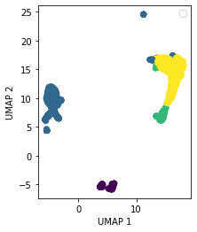
[11]:
X = [torch.tensor(rna.values), torch.tensor(adt.values)]
llh=["gaussian", "gaussian"]
views = ["rna", "adt"]
[12]:
model = spFA(X,
llh,
num_factors=5,
views=views,
y = torch.tensor(highlevel),
target_llh = "multinomial",
supervised_factors=1,
device=torch.device('cuda'),
ard = True,
horseshoe = True,
subsample=0)
model.fit_spFA(n_steps=3000, lr=0.01)
Current Elbo 1.72E+06 | Delta: 1822894: 100%|██████████| 3000/3000 [03:07<00:00, 15.99it/s]
[13]:
plt.plot(model.history)
#model.fit_spFA(n_steps=5000, lr=0.005)
[13]:
[<matplotlib.lines.Line2D at 0x7ffebb77c250>]

[14]:
Z_pred = model.get_factors()
W_pred1 = model.get_loadings(view=0)
W_pred2 = model.get_loadings(view=1)
X_pred0 = model.get_Xpred(view=0)
X_pred1 = model.get_Xpred(view=1)
X0 = X[0].numpy()
X1 = X[1].numpy()
# check reconstructions of data
fig, ax = plt.subplots(1)
ax.scatter(X0, X_pred0)
ax.plot([np.min(X_pred0), np.max(X_pred0)], [np.min(X_pred0), np.max(X_pred0)], color = "black")
ax.set_aspect('equal')
plt.xlabel("X")
plt.ylabel("X predicted")
plt.show()
plt.close()
# check reconstructions of data
fig, ax = plt.subplots(1)
ax.scatter(X1, X_pred1)
ax.plot([np.min(X_pred1), np.max(X_pred1)], [np.min(X_pred1), np.max(X_pred1)], color = "black")
ax.set_aspect('equal')
plt.xlabel("X")
plt.ylabel("X predicted")
plt.show()
plt.close()
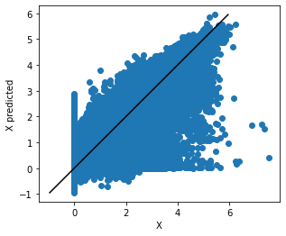
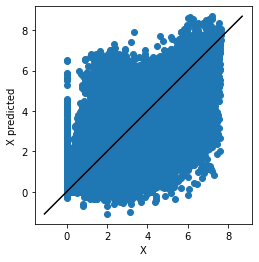
[15]:
fig, ax = plt.subplots(nrows=2, ncols=2)
for i,ax in enumerate(fig.axes):
plot = ax.scatter(rna_umap[:,0], rna_umap[:,1], c=Z_pred[:,i])
ax.set_aspect('equal')
plt.xlabel("UMAP 1")
plt.ylabel("UMAP 2")
#ax.colorbar(plot)
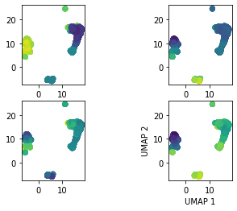
[16]:
fig, ax = plt.subplots(1)
plot = ax.scatter(rna_umap[:,0], rna_umap[:,1], c=Z_pred[:,2])
ax.set_aspect('equal')
plt.xlabel("UMAP 1")
plt.ylabel("UMAP 2")
plt.colorbar(plot)
[16]:
<matplotlib.colorbar.Colorbar at 0x7ffebd8fff40>
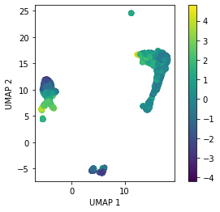
[17]:
fig, ax = plt.subplots(1)
plot = ax.scatter(Z_pred[:,0],Z_pred[:,1], c = highlevel)
plt.xlabel("Z1")
plt.ylabel("Z2")
plt.colorbar(plot)
plt.show()
plt.close()
fig, ax = plt.subplots(1)
plot = ax.scatter(Z_pred[:,0],Z_pred[:,1], c = lowlevel)
plt.xlabel("Z1")
plt.ylabel("Z2")
plt.colorbar(plot)
plt.show()
plt.close()
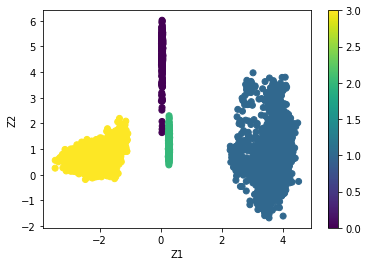
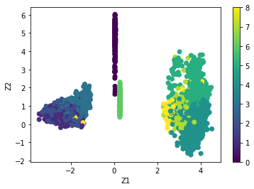
[18]:
um = umap.UMAP()
Z_umap=um.fit_transform(Z_pred)
[19]:
fig, ax = plt.subplots(1)
plot = ax.scatter(Z_umap[:,0], Z_umap[:,1], c=highlevel)
ax.set_aspect('equal')
plt.xlabel("UMAP 1")
plt.ylabel("UMAP 2")
plt.colorbar(plot)
[19]:
<matplotlib.colorbar.Colorbar at 0x7ffebd497c10>

[20]:
highlevel_map
[20]:
{'B-Cells': 0, 'Monocytes': 1, 'NK Cells': 2, 'T-Cells': 3}
[22]:
fig, ax = plt.subplots(1)
plot = ax.scatter(Z_umap[:,0], Z_umap[:,1], c=Z_pred[:,0])
ax.set_aspect('equal')
plt.xlabel("UMAP 1")
plt.ylabel("UMAP 2")
plt.colorbar(plot)
[22]:
<matplotlib.colorbar.Colorbar at 0x7ffebb2e3ac0>
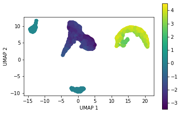
[23]:
W0 = pd.DataFrame(W_pred1, columns = rna.columns)
W1 = pd.DataFrame(W_pred2, columns = adt.columns)
plot_weights(W0, factor=0)
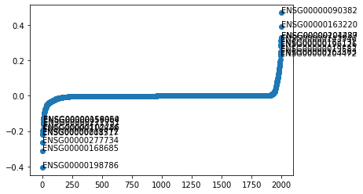
[24]:
plot_variance_explained_view(model, X)
[24]:
(<BarContainer object of 2 artists>, [0.6559015914100899, 0.9045115731300836])
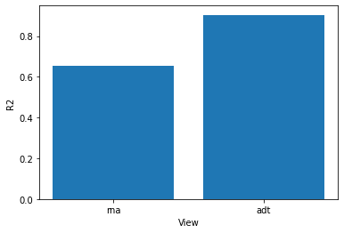
[25]:
plot_variance_explained(model, X)
[25]:
(<matplotlib.image.AxesImage at 0x7ffeb1ce5550>,
array([[0.14039605, 0.04251582],
[0.09478632, 0.17297591],
[0.01404371, 0.01007979],
[0.4099598 , 0.66637167],
[0.06498339, 0.05571219]]))
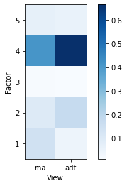